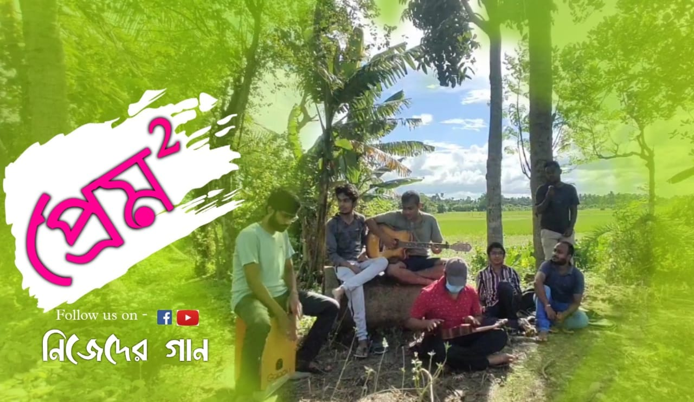

Song credits :
Lyrics - Arpan Rakshit
Tune - Indrajit Bala
Vocals - Arghyadeep Chowdhury, Jayanta Pathak,Rajib Dutta, Indrajit Bala
Shaker - Shibam Das
Guitar - Indrajit Bala
Cajon - Niladri Madhab Biswas
Percussion - Arpan Rakshit
Animation - Rajib Dutta
Videography & Edited by - Jayanta Pathak
Special Thanks :
রানী,Pritam, Asish,Vabaghure Jayanta's channel & the team Nijeder Gaan
Check it out Our Facebook Page 👇

Lyrics :
প্রেম স্কয়ার :
দুক বুক দুক ধড়ফড় করছে,
সময় গুলো পালিয়ে যাচ্ছে,
তাও কী তোমার মনে ধরে না?
খুব খুব খুব ইচ্ছে করছে,
শুধু একটু কথা বলতে,
তাও কি তুমি ফিরে দেখবেনা?
অলিগলি গুলো মুখ চিনছে!
পাড়ার লোকে সন্দেহ করছে!
তাও কি তুমি খবর পাচ্ছোনা?
কত শত ফ্যাসান ,
ইস্টাইলিস দেখতে যেন হই।
হাজার হাজার গল্প ,
দিয়ে তোর ইনফরমেশান চাই।
খুব খুব খুব ছটফট করছি!
বুক ফুক যেন ধড়ফড় করছে!
এত কেন দিচ্ছো যন্ত্রণা?
এদিক ওদিক হিমসিম খাচ্ছি।
শুকনো ডাঙায় খাবি খাচ্ছি।
তাও কি তোমার মনটা পাবোনা?
কত কথা বলার ছিলো,
তাও তা বলা হলো না!
এত বৃথা চেষ্টা (শেষে)
মুখ খোলার সাহস হলো না!
তোমার চলন অতি মর্ডান
ক্লান্ত এখন দিল পিওন
সব ঠিকানাই সাগর রঙা!
তাও কি তোমার ঝিল প্রিয়? !!!!